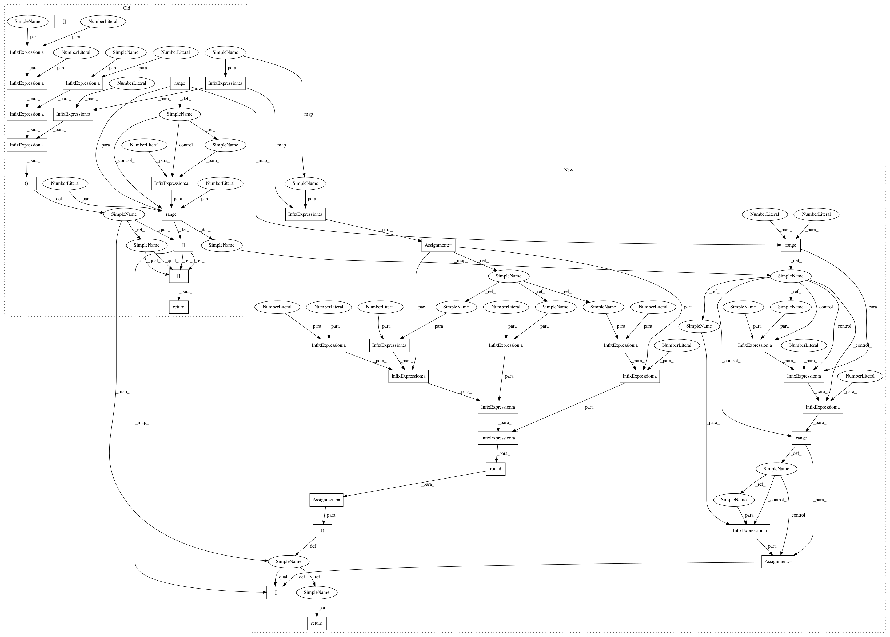

ee689fc16902074b07ab5342a66c66f732850965,dipy/reconst/shore.py,,SHOREmatrix,#Any#Any#Any#Any#,328
Before Change
qgradients[:, 0], qgradients[:, 1], qgradients[:, 2])
theta[np.isnan(theta)] = 0
M = np.zeros(
(r.shape[0], (radial_order + 1) * ((radial_order + 1) / 2) * (2 * radial_order + 1)))
counter = 0
for n in range(radial_order + 1):
for l in range(0, n + 1, 2):
for m in range(-l, l + 1):
M[:, counter] = real_sph_harm(m, l, theta, phi) * \
genlaguerre(n - l, l + 0.5)(r ** 2 / float(zeta)) * \
np.exp(- r ** 2 / (2.0 * zeta)) * \
__kappa(zeta, n, l) * \
(r ** 2 / float(zeta)) ** (l / 2)
counter += 1
return M[:, 0:counter]
def __kappa(zeta, n, l):
if n - l < 0:
After Change
r, theta, phi = cart2sphere(qgradients[:, 0], qgradients[:, 1], qgradients[:, 2])
theta[np.isnan(theta)] = 0
F=radial_order/2
n_c= np.round(1/6.0 * (F+1) *(F+2)* (4*F+3))
M = np.zeros((r.shape[0], n_c))
counter = 0
for l in range(0, radial_order+ 1, 2):
for p in range((radial_order-l)/2 +1):
n=p+l
for m in range(-l,l+1):
M[:, counter] = real_sph_harm(m, l, theta, phi) * \
genlaguerre(n - l, l + 0.5)(r ** 2 / float(zeta)) * \
np.exp(- r ** 2 / (2.0 * zeta)) * \
__kappa(zeta, n, l) * \
(r ** 2 / float(zeta)) ** (l / 2)
counter += 1
return M
def __kappa(zeta, n, l):
if n - l < 0:
In pattern: SUPERPATTERN
Frequency: 3
Non-data size: 37
Instances
Project Name: nipy/dipy
Commit Name: ee689fc16902074b07ab5342a66c66f732850965
Time: 2013-12-13
Author: mauro.zucchelli88@gmail.com
File Name: dipy/reconst/shore.py
Class Name:
Method Name: SHOREmatrix
Project Name: nipy/dipy
Commit Name: ee689fc16902074b07ab5342a66c66f732850965
Time: 2013-12-13
Author: mauro.zucchelli88@gmail.com
File Name: dipy/reconst/shore.py
Class Name:
Method Name: SHOREmatrix_pdf
Project Name: nipy/dipy
Commit Name: ee689fc16902074b07ab5342a66c66f732850965
Time: 2013-12-13
Author: mauro.zucchelli88@gmail.com
File Name: dipy/reconst/shore.py
Class Name:
Method Name: SHOREmatrix
Project Name: nipy/dipy
Commit Name: ee689fc16902074b07ab5342a66c66f732850965
Time: 2013-12-13
Author: mauro.zucchelli88@gmail.com
File Name: dipy/reconst/shore.py
Class Name:
Method Name: SHOREmatrix_odf